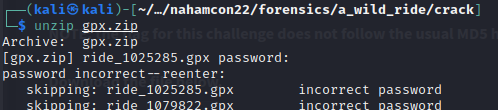

A Wild Ride
First step was to download the gpx.zip file
I attempted to unzip the gpx.zip file but found that it was protected with a password.

The next step was to crack the password with zip2john and then feed that to John the Ripper
to get the password to unzip the file.
The outfile of zip2john “zipped.txt” is a hash file that john can use with a wordlist like rockyou.txt
Let's feed john
Now we have the password to unzip the gpx.zip file.
The zip file contains 252 individual ride_XXX.gpx files. What in the world is a .gpx file?
I googled “What is a .gpx file” and clicked on the first link that was fileinfo.com :

So .gpx files are geolocation tracking data that people use to display the
routes they take for running, biking, or general travel, which we can upload to
Google Maps and it will draw our routes. Let's head to Google Maps to upload
our 252 .gpx files and draw our route. Instructions from fileinfo.com:

When I tried importing all of the files, it seemed to accept them, but would only render one
route per map layer. After attempting to add multiple layers, with one .gpx file per layer, I
realized that not only do I not have time to do all this, Google caps the number of layers you
add to a single map (9 if I remember correctly).
The data files are all the same in that they only relay lat/lon position as a string. There should
be a way to combine all of the tracking positions into a single file. I Googled "combine gtx files
into one" and found the link https://gotoes.org/strava/Combine_GPX_TCX_FIT_Files.php which is a
webapp that will take your .gpx files and combine them into one file.
I threw all my gpx files into the uploader and got an error message that it would only take 20 gpx files at a time.
I was not excited to have to do this multiple times. But at the bottom of the interface it says that if your files are too large
for the uploader, you can zip them. Okay. I created a new password free zip file of just the .gpx files to upload.
The uploader accepted the newzip.zip file and I clicked on the ‘next steps’ button that appeared.
I kept all the default parameters and scrolled to the bottom of the screen and clicked:
When this menu popped up I chose to save the file

Once this file downloaded, I went back to Google Maps and imported my new
combined .gpx file and added it to the map: